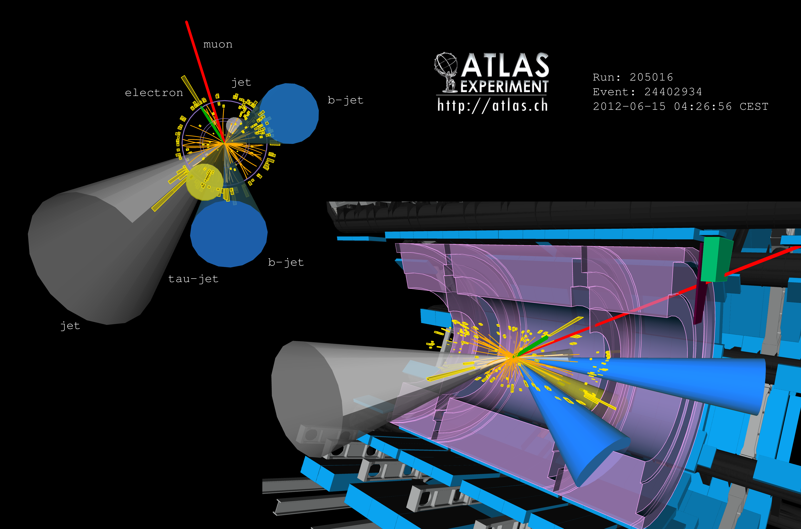

ATLAS Triggers
ATLAS collects a lot of data. A really big lot. You just won't believe how vastly, hugely, mind-bogglingly big it is. I mean, you may think it’s a lot of data stored on a Snoop Dogg compact disc, but that's just peanuts to ATLAS.
Atlas Triggering
Interesting physics events are incredibly rare. If I want to observe the Higgs boson, it might be created in a proton-proton collision at the LHC once per 10 billion (1010) collisions. In other words, very rarely. Since interesting physics events are so rare, many protons must be collided very frequently.

In 2011 and 2012, the LHC provided proton collisions every 50 nanoseconds, or 20,000,000 collisions per second. Each event requires about 1.6 MB of storage to preserve. This would present an impossible data challenge if all physics events were stored, and is overcome by the use of triggers. Triggers are hardware and software that run in ATLAS to select the most interesting events that should be permanently stored. The other events, which make up the vast majority, are not stored to disk and are permanently forgotten.

What do triggers look for? They look for signatures of elementary particles such as electrons, muons, taus, and photons. They look for clusters of particles in a small space that collectively have significant energy, called jets. They look for jets on one side of the detector with a lack of particles recoiling toward the opposite side, called missing energy. When the triggers see these signatures and the signatures are of sufficiently high energy, the event is stored permanently for further physics analysis.
Now, what happens if there is new physics out there that differs vastly from what these triggers look for? In that case, these new physics events would never be stored, nobody would ever see them, and no discovery could ever be made. And this is where my research begins...